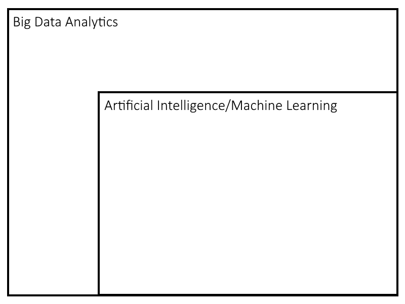

Ethical Issues in Big Data Analytics
Petru Rebeja
What is Big Data?
Mind map

Created in collaboration with my colleague Mihai Mircescu.
Complex subject to tackle
- There is no clear boundary of Big Data
- The hype makes it even harder to draw a boundary
It's an umbrella term
- The ability to process huge “treasure troves” of data and predict future outcomes
- A process that “leverages massive data sets and algorithmic analysis” to extract new insights
- A moment where the use of traditional tools is limited by the data volume, acquisition or velocity
- A tactic to operate at a large scale otherwise impossible at smaller scale
- A topic for academic and industry research
- A marketable term
Martin, Kirsten. (2015). Ethical Issues in Big Data Industry. MIS Quarterly Executive.
The name is Big Data Analytics
The notion of Big Data goes far beyond the increasing quantity and quality of data, and focuses on analysis for intelligent decision making.
Setting the scope
For the purpose of this talk we will consider AI/ML to be a part of Big Data Analytics.

How "intelligent" decisions are made?
Intricate use of statistics and probability theory
Target created a model that would predict if a customer is pregnant based on her purchase history. The model was deployed unbeknownst to shop managers and was able to predict the pregnancy of a Minneapolis customer before her father found out about it.
Statistics is not an easy science
There are three kinds of lies: lies, damned lies, and statistics.
Mark Twain, "Chapters from My Autobiography".
The case of Sally Clark
Sally Clark was wrogfully found guilty of the murder of her two infant sons based on significantly flawed statistical evidence. She was released from prison after serving three years of her sentence. Clark's experience caused her to develop serious psychiatric problems and she died in her home in March 2007 from alcohol poisoning.
The grim clouds above the umbrella
Framing Big Data as an asset, ability or technique sterilizes an important ethical discussion.
Martin, Kirsten. (2015). Ethical Issues in Big Data Industry. MIS Quarterly Executive.
Ethical Issues in Big Data Analytics
Ethical Issue #1: Morality
In January 2012 Facebook ran an experiment on 700000 of its users trying to see if their mood can be altered by the tone of the articles they were receiving. The next week, the manipulated users were more likely to use words that were in accordance with the desired mood change.
Everything We Know About Facebook's Secret Mood Manipulation Experiment
Facebook Tinkers With Users’ Emotions in News Feed Experiment, Stirring Outcry
What is wrong with that?
- Consent
- How many users knew they were part of the experiment?
- How many would have agreed to participate?
- Consequences
- How many of those users were struggling with chronic depression and decided to end it all?
Ethical issue #2: Fairness
Recidivism models (Level of Service Inventory–Revised) are intended to eliminate human bias.
O'Neil Cathy, Weapons of Math Destruction: How Big Data Increases Inequality and Threatens Democracy
What's wrong with that?
The question is, however, whether the bias was eliminated or just camouflaged with technology?
O'Neil Cathy, Weapons of Math Destruction: How Big Data Increases Inequality and Threatens Democracy
Ethical issue #3: Accidental harm is harm nonetheless
An Youtube video of a small girl doing gymnastics is harmless, right?
What's wrong with that?
- Youtubes' recommendation engine has created a wormhole where it recommends only such kind of videos
- This wormhole is a treasure trove for pedophiles
Youtube is Facilitating the Sexual Exploitation of Children, and it's Being Monetized (2019)
Ethical issue #4: Privacy
Outlier detection is the identification of rare items, events or observations which raise suspicions by differing significantly from the majority of the data.
Zimek A., Schubert E. (2017) Outlier Detection. In: Liu L., Özsu M. (eds) Encyclopedia of Database Systems. Springer, New York, NY
What's wrong with that?
- For a bank it's a transaction in Venezuela which occurred only an hour after paying with your credit card at a local grocery store in Romania.
- For a census bureau it might be a person who didn't vote for the ruling party.
Ethical issue #5: Big Brother
China plans to build a government-led national social credit system by 2020 to assess individuals, enterprises and government agencies on credit in four areas - administrative affairs, commercial activities, social behavior, and the judicial system, according to an outline issued by the State Council in 2014.
What's wrong with that?
As of March, 13.49 million individuals have been classified as untrustworthy and rejected access to 20.47 million plane tickets and 5.71 million high-speed train tickets for being dishonest […]
The social credit system is vital for the government to raise the social management level.
Reflections
Should Big Data Analytics be banned?
Definitely NOT
What should we do?
Switch focus
Despite the potential to create harm, the Big Data Industry has the potential to be a force for good and the focus therefore should be on implementing [data stewardship practices] to create value for all stakeholders.
Kristen E. Martin, Ethical Issues in the Big Data Industry
Properly define success
- Success of a model should be defined by the interests of all stakeholders
[Weapons of Math Destruction] tend to punish the poor […] The privileged, we’ll see time and again, are processed more by people, the masses by machines.
O'Neil Cathy, Weapons of Math Destruction: How Big Data Increases Inequality and Threatens Democracy
Develop profiling tools
- Big Data/AI/ML models are black boxes
- Even though academia strives to make them more transparent, the commercial interest is to keep those models as opaque as possible
- What we need is a set of tools that can assess the integrity and fairness of a model without disclosing commercial secrets
Add & improve regulations
- A free market is where the innovation thrives
- However, sensitive areas need regulations before substantial harm is done
- GDPR is a good start but not it's enough; it needs to be reviewed and improved constantly
Define a strategy
Romania in the era of Artificial Intelligence: A strategy for the development and adoption of AI technology at a country level - a project by repatriot.
Increase awareness
Education is a better safeguard of liberty than a standing army.
Edward Everett
Final tought
If you know the enemy and know yourself, you need not fear the result of a hundred battles. If you know yourself but not the enemy, for every victory gained you will also suffer a defeat. If you know neither the enemy nor yourself, you will succumb in every battle.
Sun Tzu, The Art of War